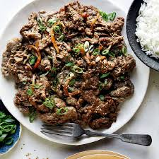

Beef Bulgogi

Beef Bulgogi is a Korean dish made of thinly-sliced beef with a sweet and savory marinade typically made with soy sauce, sugar, sesame oil, ginger, korean pear, and garlic. It is often times called Korean Beef BBQ
Ingredients
Serves 2-4 people
- 1 pound thinly-sliced beef
- 4 minced garlic cloves
- 2 chopped green onions
- 2 tablespoons soy sauce
- 2 tablespoons sugar
- 3 tablespoons water
- 1 tablespoon toasted sesame oil
- 1 tablespoon coarsely ground toasted sesame seeds
- 1/2 teaspoon ground black pepper
- Optional 1/4 teaspoon cinnamon
Steps
- Make marinade by combining the garlic, green onion, soy sauce, sugar, water, sesame oil, sesame seeds, and ground black pepper in a large bowl. Mix it well with a spoon until the sugar is well dissolved.
- Add the sliced beef and mix everything by hand until the beef is covered in the marinade. Keep in the fridge for at least 30 minutes.
- Cook on a pan or a grill before tranfering to a plate or cast iron plate to serve with rice, lettuce, ssamjang, and more side dishes.
- To eat, wrap a spoonful of rice, a piece of bulgogi, and a little bit of ssamjang in a lettuce leaf. Fold it over and eat. Repeat!
Home